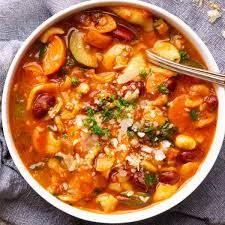

Minestrone Soup

Description
Whip up this classic Italian vegetable soup with a rich tomato base and pasta. It's low in calories and packed with fibre and vitamin C
Prep: 15 mins
Cook: 50 mins
Serves: 4-6
Ingredients
- 3 tbsp olive oil, plus extra to serve
- 1 onion, finely chopped
- 1 celery stick, finely chopped
- 1 carrot, peeled and finely chopped
- 1 courgette, finely chopped
- 70g diced smoked pancetta
- 1 large garlic clove, crushed
- ½ tsp dried oregano
- 1 x 400g can cannellini beans
- 1 x 400g can chopped tomatoes
- 2 tbsp tomato purée
- 1.2 litre vegetable stock
- 1 bay leaf
- 70g small pasta
- 100g greens - kale, chard or cavolo nero work well
- handful of basil
- finely grated parmesan, to serve
Steps
- Heat the oil in a large saucepan or casserole pot over a low-medium heat and gently fry the onion, celery, carrot, courgette and pancetta for 10 mins.
- Add the garlic and oregano, and cook for 1 min.
- Tip in the beans, chopped tomatoes, purée, stock and bay leaf. Season to taste.
- Bring to the simmer and cook for 30 mins.
- Add the pasta and greens, and cook for a further 10 mins.
- Ladle into bowls and scatter with the basil and some parmesan to serve.